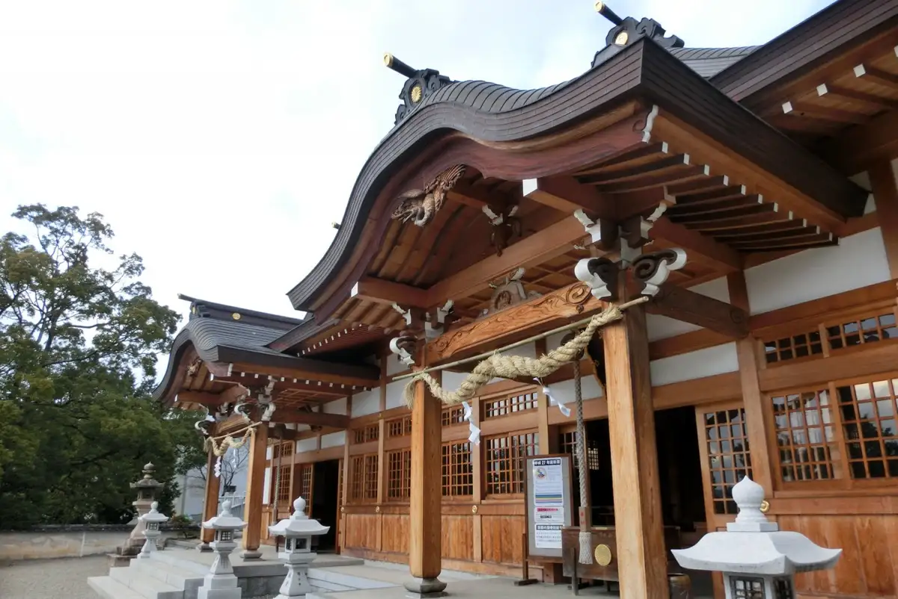
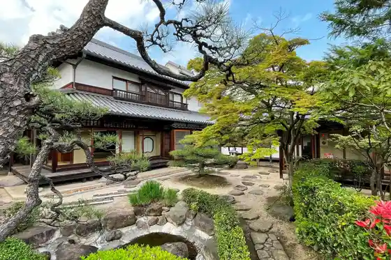
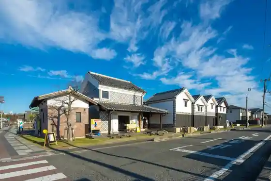
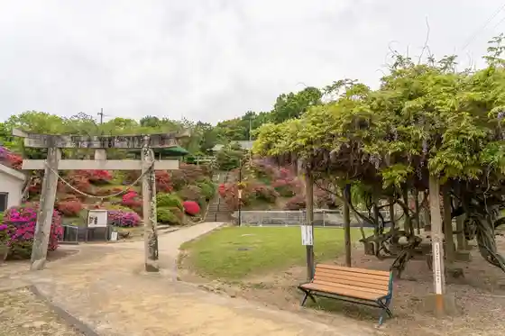
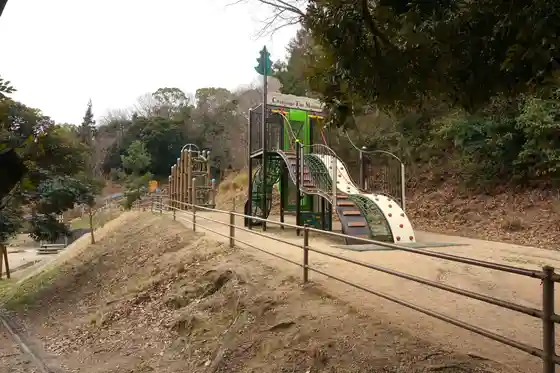

Japan / Okayama / Hayashima
Hayashima, Okayama
Hayashima · Okayama
Hayashima
Highlighted on the Okayama map.

Sights
Ikashi no Sha
Hayashima, Okayama · Official / source link

Hayashima Kanko Center
Hayashima, Okayama · Official / source link

Hayashima Park
Hayashima, Okayama · Official / source link

Hayashima Fureai no Mori Park
Hayashima, Okayama · Official / source link

Hayashima Hana Goza Teori Ri Densho Kan
Hayashima, Okayama · Official / source link
Furo no Michi
Hayashima, Okayama · Official / source link
Hayashima Folk History Museum
Hayashima, Okayama · Official / source link
Tsurusaki Shrine
Hayashima, Okayama · Official / source link
Togawa Ie Memorial Museum
Hayashima, Okayama · Official / source link
Kuni Hoko Park
Hayashima, Okayama · Official / source link
Hayashima Kanko Boranteiagaido no Kai
Hayashima, Okayama · Official / source link